dataset_final
Unión de Social Media Impact on Life y Students Social Media Addiction. Encuesta transversal a estudiantes de secundario, grado y posgrado.
- Filas
- 1.743
- Columnas
- 11
- Países
- 110
Trabajo Práctico · Análisis de Datos · 2026
Impacto del uso de redes sociales sobre el sueño, el rendimiento académico y la salud mental de 1.038 estudiantes de 110 países.
Agenda
01 · Introducción
¿Cuál es el impacto del uso de redes sociales en la calidad de vida de los estudiantes, y es igual para todos?
El tiempo frente a pantallas suele asociarse a peor descanso y a menor bienestar. Hablar de “redes sociales” en general, sin embargo, puede ocultar que su efecto varía según quién las usa, dónde vive y qué plataforma elige. Medimos el impacto con cuatro indicadores: horas de uso, horas de sueño, salud mental y afectación académica percibida.
02 · Datos y método
Unión de Social Media Impact on Life y Students Social Media Addiction. Encuesta transversal a estudiantes de secundario, grado y posgrado.
Relationship_Status es la única columna con faltantes. Al ignorarla aparecen filas idénticas: el mismo estudiante cargado en ambas fuentes.
Avg_Daily_Usage_Hours · uso diario (1,5–8,5 h)Sleep_Hours_Per_Night · sueño (3,8–9,6 h)Mental_Health_Score · salud mental (4–9; más alto = mejor)Affects_Academic_Performance · afectación académica percibida (Sí/No)No se detectaron valores atípicos fuera de rango. Los notebooks de P1–P3 trabajan sobre los 1.743 registros y el de P4 sobre los 1.038 únicos; en la Discusión verificamos que las conclusiones no cambian.
02 · Datos y método
Lectura desde el repositorio; tipos, nulos, duplicados y rangos con describe().
Se descarta Relationship_Status (no es relevante para las preguntas) y se eliminan los 705 duplicados.
Grupos de edad (18–20, 21–22, 23–24) · nivel de desarrollo según ingreso del Banco Mundial · plataformas con < 20 casos en “Otras” · nivel de uso (≤4 h, 4–6 h, >6 h).
Medias y medianas por grupo (groupby, crosstab, pivot_table), correlación de Pearson y visualización.
PythonpandasNumPymatplotlibseabornJupyter / Colab
Sección
Qué dicen los datos sobre cada una de las cuatro preguntas.
03 · Panorama general
Correlaciones de Pearson calculadas sobre los 1.038 estudiantes únicos (−0,79 y −0,81 sobre la base completa). Fuente: elaboración propia en base a los notebooks del TP.
P1Uso de redes y sueño
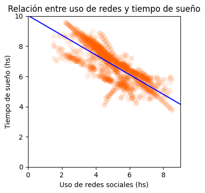
P2Impacto académico
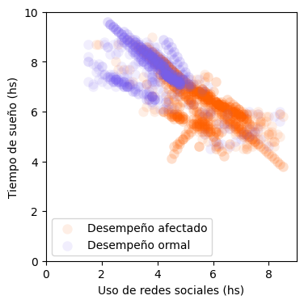
P2Impacto académico
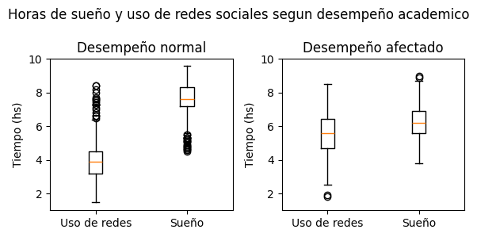
| Indicador (media) | No afectado | Afectado | Dif. |
|---|---|---|---|
| Uso diario (h) | 3,93 | 5,68 | +1,75 |
| Sueño (h) | 7,54 | 6,22 | −1,32 |
| Salud mental (4–9) | 7,26 | 5,57 | −1,69 |
| Estudiantes | 391 | 647 |
Respuesta P2Sí: el rendimiento afectado se asocia con más uso, menos sueño y peor salud mental. Las cajas casi no se superponen en el uso diario (mediana 3,9 h vs. 5,7 h).
P3Diferencias por edad
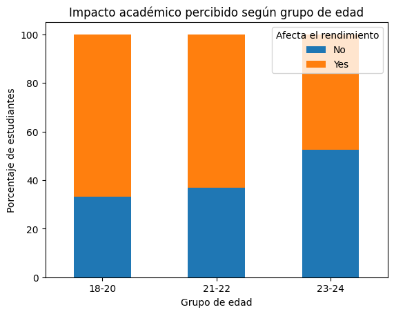
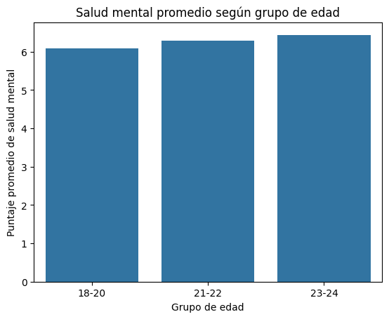
Gradiente claro en lo académico: declara afectación el 67% de los de 18–20 años, el 63% de los de 21–22 y solo el 48% de los de 23–24.
Salud mental levemente mejor con la edad: 6,10 → 6,28 → 6,44. La diferencia es pequeña y el eje desde cero la atenúa visualmente.
Uso casi igual: 5,1 h, 4,9 h y 4,8 h. El grupo 23–24 tiene solo 208 casos (148 únicos), por lo que su estimación es menos estable.
P3Diferencias por edad
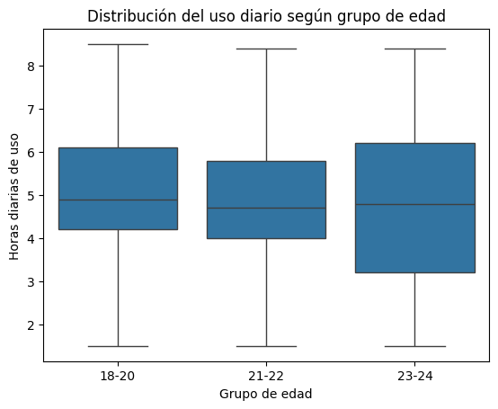
| Grupo | Uso (h) | Sueño (h) | Salud m. | Afecta |
|---|---|---|---|---|
| 18–20 | 5,09 | 6,68 | 6,10 | 67% |
| 21–22 | 4,91 | 6,90 | 6,28 | 63% |
| 23–24 | 4,81 | 6,75 | 6,44 | 48% |
Respuesta P3 · edadDiferencia moderada: los menores de 21 son el grupo más expuesto, sobre todo en la percepción académica. Las medianas de uso (≈ 4,7–4,9 h) y las cajas se superponen ampliamente.
P3Nivel de desarrollo del país
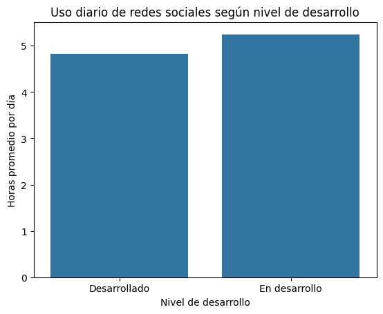
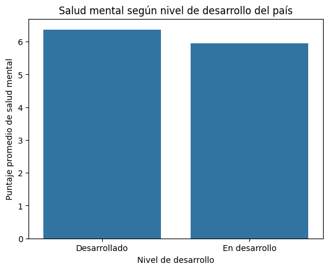
Clasificación: “Desarrollado” = ingreso alto según el Banco Mundial (1.103 casos); el resto, “En desarrollo” (638). Vaticano queda sin clasificar.
Uso: 5,25 h vs. 4,83 h (+0,4 h, +9%) en los países en desarrollo.
Salud mental: 5,94 vs. 6,37 (−0,43 puntos). Diferencias que se mantienen tras eliminar duplicados.
P3Nivel de desarrollo del país
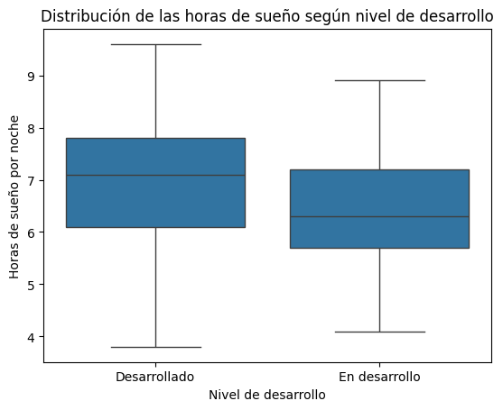
| Indicador | Desarrollado | En desarrollo |
|---|---|---|
| Uso diario (h) | 4,83 | 5,25 |
| Sueño, mediana (h) | 7,1 | 6,3 |
| Salud mental | 6,37 | 5,94 |
| Afecta rendimiento | 56% | 74% |
Respuesta P3 · desarrolloSí: los estudiantes de países en desarrollo muestran un perfil menos favorable en los cuatro indicadores. Es la diferencia entre grupos más marcada del trabajo.
P4¿Todas las redes impactan igual?
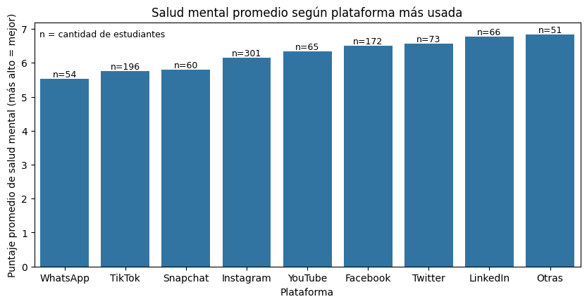
| Plataforma | Uso | Sueño | S. mental | Afecta |
|---|---|---|---|---|
| 6,48 | 5,87 | 5,54 | 100% | |
| TikTok | 5,38 | 6,32 | 5,77 | 85% |
| Snapchat | 5,54 | 6,01 | 5,81 | 77% |
| 4,88 | 6,96 | 6,15 | 65% | |
| 4,83 | 7,08 | 6,51 | 41% | |
| 4,23 | 6,82 | 6,77 | 33% | |
| Otras | 4,34 | 7,61 | 6,84 | 39% |
Brecha de 1,3 puntos de salud mental entre extremos. Hipótesis: las redes de mensajería y video corto, de uso continuo, acumulan más horas de pantalla que las de uso puntual (LinkedIn, Twitter).
P4¿Plataforma u horas de uso?
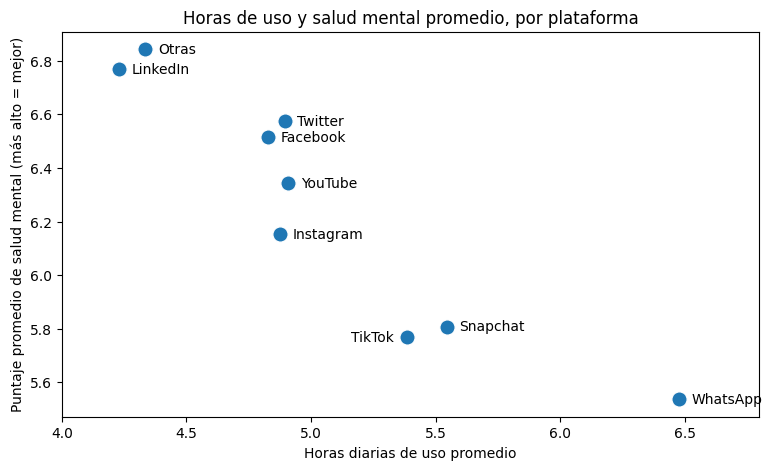
Control por nivel de uso · salud mental
| Plataforma | ≤4 h | 4–6 h | >6 h |
|---|---|---|---|
| 7,64 | 6,63 | 4,86 | |
| 7,49 | 6,72 | 5,05 | |
| TikTok | 7,11 | 5,89 | 4,87 |
| Snapchat | 7,43 | 5,87 | 4,99 |
| Total | 7,51 | 6,16 | 4,93 |
Respuesta P4 · plataformasSí, pero con matices: entre usuarios con horas similares la brecha baja de 1,3 a 0,7–0,9 puntos. Las horas pesan más que la red elegida.
P4Brecha de género
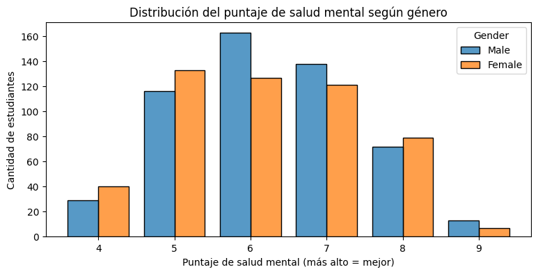
| Indicador | Mujeres | Varones |
|---|---|---|
| Uso diario (h) | 5,08 | 4,96 |
| Sueño (h) | 6,68 | 6,76 |
| Salud mental (media) | 6,15 | 6,25 |
| Salud mental (mediana) | 6,0 | 6,0 |
| Afecta rendimiento | 63% | 62% |
Respuesta P4 · géneroNo: la diferencia en salud mental es de 0,10 puntos, con la misma mediana. Dentro de cada plataforma la brecha es ≤ 0,42 y cambia de signo. El género sí incide en qué red se usa (Instagram: 64% mujeres; WhatsApp: 80% varones).
Sección
Qué tan sólidas son estas respuestas.
04 · Discusión
| Pregunta | Evidencia principal | Respuesta |
|---|---|---|
| P1 · Sueño | r = −0,79 entre uso y sueño; ≈ 39 min menos de sueño por hora de uso (Fig. 1). | Sí, fuerte |
| P2 · Rendimiento | Afectados: +1,75 h de uso, −1,3 h de sueño, −1,7 puntos de salud mental (Fig. 2–3). | Sí, fuerte |
| P3 · Edad | Afectación académica 67% (18–20) vs. 48% (23–24); uso y salud mental casi iguales (Fig. 4–6). | Moderada |
| P3 · Desarrollo | En desarrollo: +0,4 h de uso, −0,8 h de sueño (mediana), −0,43 de salud mental, 74% vs. 56% afectados (Fig. 7–9). | Sí |
| P4 · Plataforma | Brecha de 1,3 puntos que se reduce a 0,7–0,9 al controlar por horas de uso (Fig. 10–11). | Sí, parcial |
| P4 · Género | Diferencia de 0,10 puntos en salud mental, misma mediana, misma afectación (Fig. 12). | No |
Los grupos más afectados (países en desarrollo, usuarios de WhatsApp/TikTok/Snapchat, estudiantes jóvenes) son también los que más horas pasan en redes: el tiempo de uso funciona como posible variable mediadora o de confusión común.
04 · Discusión
Prueba de robustez · ¿cambia algo sin duplicados?
| Resultado | n = 1.743 | n = 1.038 |
|---|---|---|
| r uso ↔ sueño | −0,79 | −0,79 |
| r uso ↔ salud mental | −0,81 | −0,82 |
| Uso: en desarrollo vs. desarrollado | 5,25 / 4,83 | 5,24 / 4,90 |
| Salud mental: en desarrollo vs. desarrollado | 5,94 / 6,37 | 5,98 / 6,32 |
| Afecta rendimiento: 18–20 vs. 23–24 | 67% / 48% | 66% / 48% |
Las diferencias por desarrollo superan ampliamente el error de muestreo (estadístico t de Welch de 3,6 a 5,7 en valor absoluto); la de género no (t ≈ 1,4).
Limitaciones
05 · Conclusiones
Muchas gracias